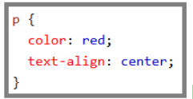

- El selector apunta al elemento HTML que desea estilizar.
- El bloque de declaración contiene una o más declaraciones separadas por punto y coma.
- Cada declaración incluye un nombre de propiedad CSS y un valor, separados por dos puntos.
- Una declaración CSS siempre termina con un punto y coma, y los bloques de declaración están rodeados por llaves.
Ejemplo
 intentalo tu mismolos selectores CSS
los selectores de CSS se utilizan para "buscar" (o seleccionar) elementos HTML en función de su nombre de elemento, id, clase, atributo y más.
El selector de elementos
El selector de elementos selecciona elementos en función del nombre del elemento.
Puede seleccionar todos los elementos p> en una página como esta (en este caso, todos los elementos p> estarán alineados en el centro, con un color de texto rojo):
Ejemplo
 intentalo tu mismo
intentalo tu mismo